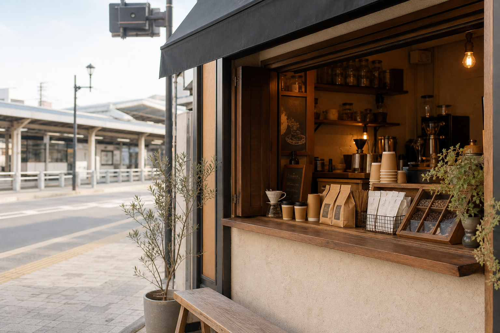

HAND DRIP
ハンドドリップコーヒー
注文後に一杯ずつハンドドリップ。地域メディアでは、見ているだけでも楽しいほど丁寧に淹れる様子が紹介されています。

※写真は差し替え可このページは、NexusGuildが公開情報をもとに無料で作成したデモサイトです。お店の雰囲気が伝わるように、文章・写真・構成を仮で整えています。正式公開の前に、事実確認と写真差し替えを行う前提です。
「いいお店なのに、情報が点在している」。そんな小さなお店に、見やすい1ページを先に作ってお届けする取り組みです。
Instagram、ブログ、地域メディアで確認できた内容を整理し、ChieCoffeeらしい静かな温度でまとめました。不明な情報は作らず、確認が必要な箇所には「要確認」を残しています。
オーナー紹介
Instagramの投稿では、道路に面したお店だからこそ「車にお気をつけください」と添えたり、購入後に荷物を整えられるカウンターを増設したことが紹介されています。コーヒーだけでなく、立ち寄る人の小さな時間まで見ているお店です。
オーナーは「ちえこさん」要確認、コーヒーインストラクター資格をお持ち要確認、上福岡に20年以上在住要確認という情報は、正式公開前にご本人確認を取ってから反映します。